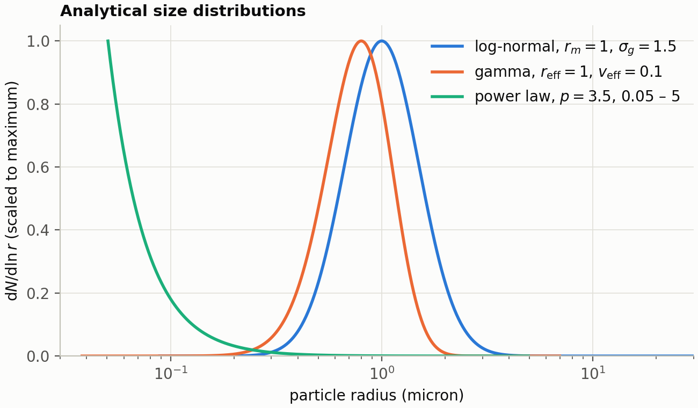
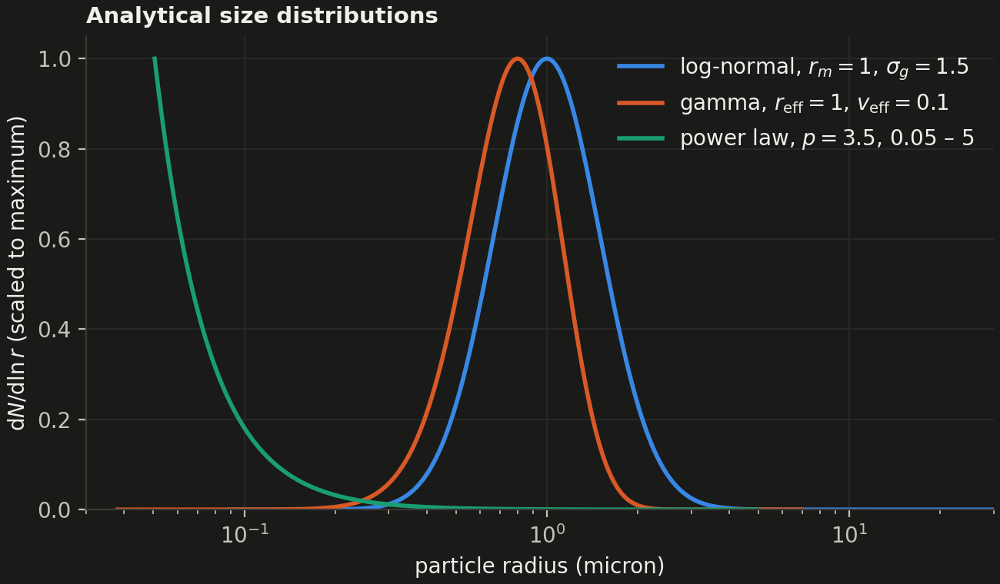

Particle size distributions¶
In most applications, particles are not of a single size, but follow a size distribution \(n(r) = \mathrm{d}N / \mathrm{d}r\), where \(n(r) \, \mathrm{d}r\) is the number of particles with radii between \(r\) and \(r + \mathrm{d}r\). LX-MIE can integrate all optical properties over such a distribution. This page describes the available distributions, the calculated quantities, and the numerical integration. The corresponding interfaces are documented in
API reference for the Python package,
Particle size distributions for the command-line tool,
API reference for the C++ library.
Size-integrated quantities¶
In the following, angle brackets denote the average over the size distribution,
For a size distribution, LX-MIE calculates:
Mean cross sections per particle
for extinction, scattering, and absorption.
Mean geometric cross section and effective radius
Effective efficiencies
Asymmetry parameter, phase function, and Legendre coefficients. These quantities are averaged with the scattering cross sections as weights, e.g.
The size-averaged phase function and its Legendre series have the same normalisation as those of a single particle (see Conventions and units). In particular, the second Legendre coefficient is equal to the asymmetry parameter of the distribution.
Since all quantities are ratios of integrals over the distribution, the normalisation of \(n(r)\) is irrelevant.
From mean cross sections to opacities¶
Multiplying the mean cross sections by the total number density \(N_\mathrm{tot}\) of the particles yields the extinction, scattering, and absorption coefficients,
The single scattering albedo of the distribution is \(\omega_0 = \langle C_\mathrm{sca} \rangle / \langle C_\mathrm{ext} \rangle\).
Available distributions¶


Examples of the three analytical size distributions, shown as the number of particles per logarithmic radius interval. The curves cover the radius ranges that are chosen automatically by LX-MIE.¶


Examples of the three analytical size distributions, shown as the number of particles per logarithmic radius interval. The curves cover the radius ranges that are chosen automatically by LX-MIE.¶
Log-normal distribution¶
The parameters are the median radius \(r_m\) and the geometric standard deviation \(\sigma_g > 1\). The effective radius of the distribution is
Note
The width of a log-normal distribution is sometimes also specified by \(\sigma = \ln \sigma_g\). LX-MIE expects the geometric standard deviation \(\sigma_g = \mathrm{e}^{\sigma}\), which is always larger than one.
Gamma distribution¶
This is the gamma distribution in the form of Hansen & Travis [HT74]. Its two parameters directly correspond to the effective radius \(a = r_\mathrm{eff}\) and the effective variance \(b = v_\mathrm{eff}\) of the distribution, with \(0 < b < 0.5\).
Power law¶
The parameters are the smallest and largest radius, and the exponent \(p\). A well-known example is the size distribution of interstellar dust grains by Mathis, Rumpl & Nordsieck (1977) with \(p = 3.5\).
Tabulated distribution¶
An arbitrary distribution can be given by the values of \(n(r) = \mathrm{d}N/\mathrm{d}r\) at a set of strictly increasing radii. Between the tabulated radii, the integrands are assumed to be linear, i.e. the distribution is integrated with the trapezoidal rule. The table therefore has to resolve the distribution sufficiently well.
Discrete size bins¶
In the Python package and the C++ library, a distribution can also be defined directly by a list of radii and the number of particles for each radius. This is the appropriate choice for the discrete size bins of a cloud or haze model. In this case, the integrals above turn into sums over the bins,
with the particle numbers (or number densities) \(w_i\).
Important
The weights of discrete size bins are particle numbers, whereas a tabulated distribution contains the values of the density \(\mathrm{d}N/\mathrm{d}r\). Using particle numbers per bin as a tabulated distribution gives incorrect results if the bins do not all have the same width.
Numerical integration¶
Internally, every size distribution is represented by a set of radii \(r_i\) and weights \(w_i = n(r_i) \, \Delta r_i\). One Mie calculation is performed for each radius, and the integrals over the distribution are replaced by sums.
Radius grid¶
For the three analytical distributions, the radii are distributed equidistantly in \(\ln r\) and the integrals are evaluated with the trapezoidal rule. The number of radii is 500 by default and can be changed by the user.
Integration limits¶
The log-normal and the gamma distribution formally extend from zero to infinity. Their integration limits are chosen automatically, such that they cover
the distribution itself, which is required for its normalisation, and
the distribution weighted with \(r^6\). This is the steepest possible size dependence of a cross section (scattering in the Rayleigh limit) and ensures that the contribution of the large particles is included.
For the log-normal distribution, the grid extends from
i.e. from six standard deviations below the median of \(n(r)\) to six standard deviations above the maximum of \(r^6 n(r)\). For the gamma distribution, the lower limit is chosen such that the neglected fraction of the total particle number is about \(10^{-8}\). The upper limit is located far in the exponential tail of \(r^6 n(r)\).
Distribution |
Smallest radius |
Largest radius |
|---|---|---|
Log-normal, \(r_m = 1\), \(\sigma_g = 1.5\) |
0.088 |
30.5 |
Gamma, \(r_\mathrm{eff} = 1\), \(v_\mathrm{eff} = 0.1\) |
0.038 |
7.04 |
In the Python package and the C++ library, the limits can be set explicitly
with the parameters r_min and r_max. This truncates the distribution
at these radii.
Note
Due to the weighting with \(r^6\), the upper limit of a broad
log-normal distribution can be very large. For \(\sigma_g = 3\), for
example, it is about \(10^6 \, r_m\). Since the computing time of a
Mie calculation increases with the particle size, calculations for very
broad distributions at short wavelengths can take considerably longer. If
the large particles are known to be irrelevant, the distribution can be
truncated with r_max.
Accuracy¶
The Mie efficiencies of weakly absorbing particles oscillate rapidly as a function of the particle size (see the figure on the start page). The integration over the size distribution has to resolve these oscillations. The accuracy therefore depends on the number of radii, the width of the distribution, the ratio of the particle sizes to the wavelength, and the absorption of the material.
The following table shows the relative errors of the mean extinction cross section for a log-normal distribution with \(r_m = 1\), \(\sigma_g = 1.5\), and a real part of the refractive index of 1.5 at a wavelength of 0.55, as a function of the number of radii:
Number of radii |
\(k = 0\) |
\(k = 0.01\) |
|---|---|---|
100 |
\(1 \times 10^{-2}\) |
\(4 \times 10^{-3}\) |
500 (default) |
\(2 \times 10^{-3}\) |
\(9 \times 10^{-5}\) |
2000 |
\(3 \times 10^{-4}\) |
\(< 10^{-9}\) |
10000 |
\(7 \times 10^{-5}\) |
\(< 10^{-9}\) |
As a rule of thumb, the size-integrated quantities are accurate to about \(10^{-4}\) – \(10^{-3}\) with the default number of 500 radii. The largest errors occur for non-absorbing particles that are large compared to the wavelength. Absorption damps the oscillations and strongly improves the convergence. For higher accuracy or very broad distributions, the number of radii can be increased. The computing time is proportional to the number of radii.
References¶
Hansen, J. E. & Travis, L. D. (1974), Light scattering in planetary atmospheres, Space Science Reviews 16, 527–610